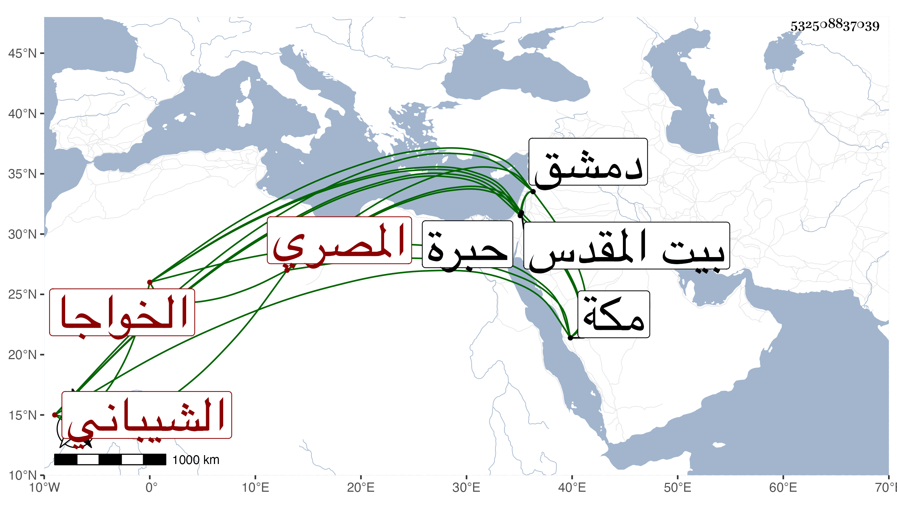

0902Sakhawi.DawLamic.ITO20230111-ara1.EIS1600.532508837039
Biography ID: 532508837039
إبراهيم بن عبد الرحمن بن عبد الله بن علي بن عبد المحسن بن جمال الثنا الخواجا كمال الدين الشيباني المصري نزيل مكة وأحد التجار ممن سافر لدمشق وغيرها وزار القدس والخليل ويعرف بكمال ذكره ابن فهد في معجمه وأنشد عنه قوله :
| بدت تختال في دل سعاد | تخال كأن بجفنيها سهاد |
| فقلت لناظريها عوذوها | بحم الدخان وان يكاد |
وأنشد عنه غير ذلك . مات في سنة ثمان أظنه وأربعين فقد رأيت ابن فهد كتب عنه في سنة إحدى وأربعين بجدة . وسيأتي أحمد وعبد الله ابنا عبد الله بن عبد الرحمن فكأنهما ابنا أخ لهذا .
